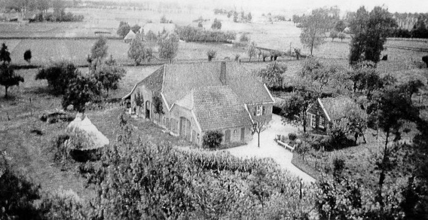
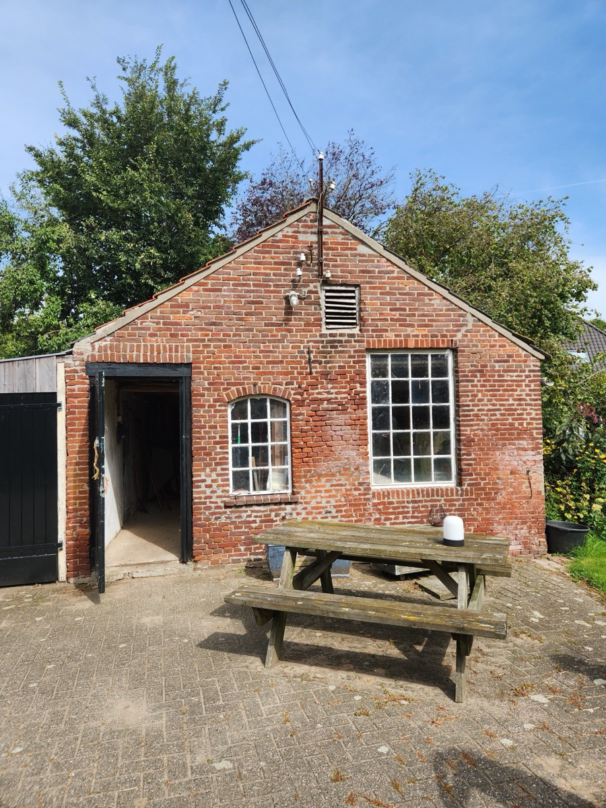

A month before Geert came to Hendrik Satter's farm, one of the first eyewitness accounts of the Nazi gas chambers was written out in its farmhouse and hidden in its chicken coop. It lay there, under a roof tile, for the whole year Geert hid on the farm. The witness was Kurt Gerstein, an SS officer. He never came to Sinderen himself: his account reached the farm through two Dutchmen, a friend of his in Doesburg and a resistance man who worked with the Satters.




No source says Geert saw the document or knew it was there. This section tells its story because it happened on the farm and among the people Geert lived with, and because it is about the fate Geert refused to help bring on Rotterdam's Jews.
Who Kurt Gerstein was
Gerstein was born in Münster, Germany, on 11 August 1905 and trained as a mining engineer. He was a committed Protestant, active in church youth work and in the Confessing Church, the part of the German Protestant church that resisted Nazi control. In 1936 he was arrested for sending out anti-Nazi religious pamphlets and expelled from the Nazi party; in July 1938 he was held for about six weeks in the Welzheim camp.
In February 1941 his sister-in-law, Berta Ebeling, died at Hadamar, one of the hospitals where the Nazi "euthanasia" programme killed psychiatric patients. In March 1941 Gerstein joined the Waffen-SS. He later said he joined to see from the inside what was being done and to tell the world; historians note that he had applied before Berta's death, and his motives are still debated. Part of his basic training was in Arnhem, and while he was there he looked up an old friend from a Christian student association, the Dutch engineer J.H. (Herman) Ubbink, who ran an iron foundry in Doesburg.
Because he knew about disinfection, the SS posted him to its Hygiene Institute in Berlin, where he dealt with Zyklon B, the poison gas also used at Auschwitz. In August 1942 he was sent to the extermination camps of Belzec and Treblinka in occupied Poland, to change their gas chambers from engine exhaust to cyanide. At Belzec he watched the gassing of a transport of Jews from Lwów, from their arrival by train to their burial. The change he was sent to make was never carried out. On the train back to Berlin he told a Swedish diplomat, Baron Göran von Otter, everything he had seen, and in the months that followed he tried to tell the papal nuncio in Berlin, Swiss diplomats and Protestant church leaders.
What the "Gerstein Report" is
In April 1945 Gerstein gave himself up to the French army in Reutlingen. Held in Rottweil, he wrote down his account in French and then twice in German (April–May 1945). These statements are what historians call the Gerstein Report. A French version was used as evidence at the Nuremberg trials (document PS-1553), and it is still one of the most quoted descriptions of how the gas chambers of Belzec and Treblinka worked. Historians treat it as a genuine eyewitness account, though some of its numbers are too high; the historian Florent Brayard argues that those numbers are what the camp commanders boasted to Gerstein at the time.
The French moved Gerstein to the Cherche-Midi military prison in Paris as a suspected war criminal. He was found dead in his cell on 25 July 1945; the official finding was suicide, though some suspect he was murdered. In 1950 a German denazification court in Tübingen classed him as an offender because of the Zyklon B he had supplied. In January 1965 the state of Baden-Württemberg cleared his name. His story is told in Rolf Hochhuth's 1963 play The Deputy, which opens with Gerstein pleading with the papal nuncio, and in Costa-Gavras's 2002 film Amen.
How Gerstein’s account reached the Satter farm
Berlin, February 1943. Ubbink visited Gerstein in Berlin and found him in despair. Ubbink later wrote: "He asked me if I could get in touch with people who had radio contact with London. I told him I could. He asked me, no — more than that, he begged me to transmit this story to England, so it would be known all over the world, and that the German people could be warned." (Brayard, p. 161)
Doesburg. Ubbink's foundry was a distribution point for the underground papers Vrij Nederland and Trouw. He passed Gerstein's account to a resistance man he knew only as "Cor": Cornelis van der Hooft from Overschie, Rotterdam, the chief distributor of the illegal papers in the Achterhoek and one of the early Trouw men. Twenty years later Ubbink recognised him from a photograph: "We called him Cor." (Van Kaam 1995; De Gelderlander, 5 May 2012, reproduced in Hoekstra 2013, pp. 22–23)
The Satter farmhouse, 25 March 1943. Van der Hooft came to the farm in Sinderen and wrote out a four-page Dutch version, headed Tötungsanstalten in Polen ("Killing installations in Poland"), with Hendrik Satter and his son Jo watching. Jo remembered: "I can still see Cor sitting there writing. He was actually completely shaken by it. ... When Cor was finished, he said: 'This is such a terrible thing; you must read this.'" (Van Kaam 1995; Brayard places the meeting "in the outskirts of Doesburg", p. 163)
The chicken coop. Jo's sister Willemien, then 21, overheard them: "They did not know what to do with it. I heard them say 'unbelievable' a few times. They thought it might be a trap. Could the writer be trusted, and if so, were he and his family safe, because he could easily be recognised from the report? In the end I heard Jo say: 'put it away in the chicken coop.'" (Trouw, 30 Jan 2014, translated) The plan was to get the officer and his family into hiding first, with the Satters finding an address, and only then publish. Van der Hooft went to take that message back to Ubbink, but never came back for the document. (Hoekstra 2013, p. 23)
London, April–September 1943. The account did reach the Dutch government in exile. A typed version almost identical to the farm's, marked "Rappt. Nr. 61", probably arrived in London on 24 April 1943 or a few days before, "perhaps by radio". The minister of war, Van Lidth de Jeude, paraphrased it in his diary on 8 May. In the summer of 1943 Van Haersma, of the government in exile, decided to ask the Inter-Allied Information Committee in New York to publish it; Brayard finds it "difficult to determine" whether it was ever passed on, and his account ends "in uncertainty". As far as is known it was never published. The London copy was only found in 1992. (Brayard, pp. 165–167)
The report and Geert
The timing. The report was written on 25 March 1943. Two weeks later, on 9 April, Geert went into hiding rather than arrest Jews in Rotterdam, and by late April he was living on the Satter farm. The document stayed under the roof tile until after the war.
Cor van der Hooft and the Satters. No source puts Geert and Van der Hooft together. In 1946 Van der Hooft’s widow filled in a US Army helper form for him: known as "Cor", member of "Leeuwengarde and Trouw", "Arrested on 17-4-44". She wrote that his father had told her "he got pilots away", and named Hendrik Satter and Anne Schaap among the people who could give more information. The Army checked: Satter and Schaap did not mention him, a note on the form reads "but nobody mentions him", and it is marked "No award". Van Kaam writes that Van der Hooft was arrested on a train in mid-April 1944 because of an error in his identity card, a few days before the farm was raided and Geert, Hendrik Satter and Schaap were taken (NARA helper file, pp. 2–3; Van Kaam 1995; see the airman-helping network). Shot in the legs while trying to escape, he was later taken to Sachsenhausen, near Oranienburg. In April 1945, when the prisoners were marched away, he could not walk, and the SD shot him by the side of the road. His widow gave his death as 22 April 1945. (Van Kaam 1995)
Geert was kept out of it. Hoekstra writes that Geert was not allowed into the Trouw meetings at the farm (Hoekstra 2013, p. 5). That fits the resistance rule Willemien describes: the less you knew, the less you could give away under torture.
After the war
The farmhouse burned down on Good Friday, 30 March 1945, the day Sinderen was liberated, in the fighting with the Canadian army (family account), but the chicken coop survived. The farm on the Sinderenseweg was rebuilt in 1952 "voor rekening van de wed. H. Satter" (Varsseveld news, 30 Apr 1952). Jo Satter lifted the roof tile and found the document. He kept it among his papers until 22 November 1966, when he saw a rerun of Lou de Jong's television series De Bezetting (The Occupation) and sent De Jong a copy. De Jong, the leading Dutch historian of the war, used it in a 1967 lecture to argue that even brave resistance workers could not bring themselves to believe the news of the gas chambers. Jo Satter always disagreed: they believed it, he said, but the man who gave it to them had to be got to safety first. (Van Kaam 1995; Brayard, pp. 163–164)
Gerstein never learned what had happened to it. A letter he wrote to Ubbink in 1945, a few weeks before he died, says: "Ask your people if they at least believe now what happened in Belzec, etc.!" Van Kaam writes that it was found in Rottweil in early 1949, never sent on by the hotel owner; Brayard, that it was found among Gerstein's effects after his death and sent to his widow in 1949 (Van Kaam 1995; Brayard, p. 162)
Today Van der Hooft's handwritten original is at the Herinneringscentrum Kamp Westerbork, given by the journalist Ben van Kaam, who had it from Jo Satter. The typed London copy is in the Nationaal Archief in The Hague. (Hoekstra 2013, p. 23, quoting De Gelderlander, 5 May 2012) Brayard's article prints the full report in English (pp. 174 ff.).
Sources for Gerstein's life outside the Netherlands: United States Holocaust Memorial Museum, "Kurt Gerstein"; JTA, 1965, on his rehabilitation; Brayard 2000.
About this page
Taken from Geert Greydanus (1899–1965): a timeline from the family papers. Each saved source links to the original and to the copy in this archive.
Other people: Wietske Walinga-Greydanus, The Satter family, Anne Schaap, Leo Palache, Willy Markus, Willem Arnold Rohaan, Hendrik Pieter Heinen, Martinus Antonius Lelivelt, Teunis Klaas Wortman, Cornelis Coenraad Poulie, Albertus Hendrikus Marcusse, Gerrit Jan van den Boogerd, Willem Westland and Jacobus Westland, Johannes Berlijn, Johan Gerard Westerweel, Karel Roelof Verschuur, Eemke van der Veen, Aaron Akker, Johannes Antonius Schepen.
Text CC BY 4.0, Jared Dykstra; family papers and copies of others’ work excluded (details).